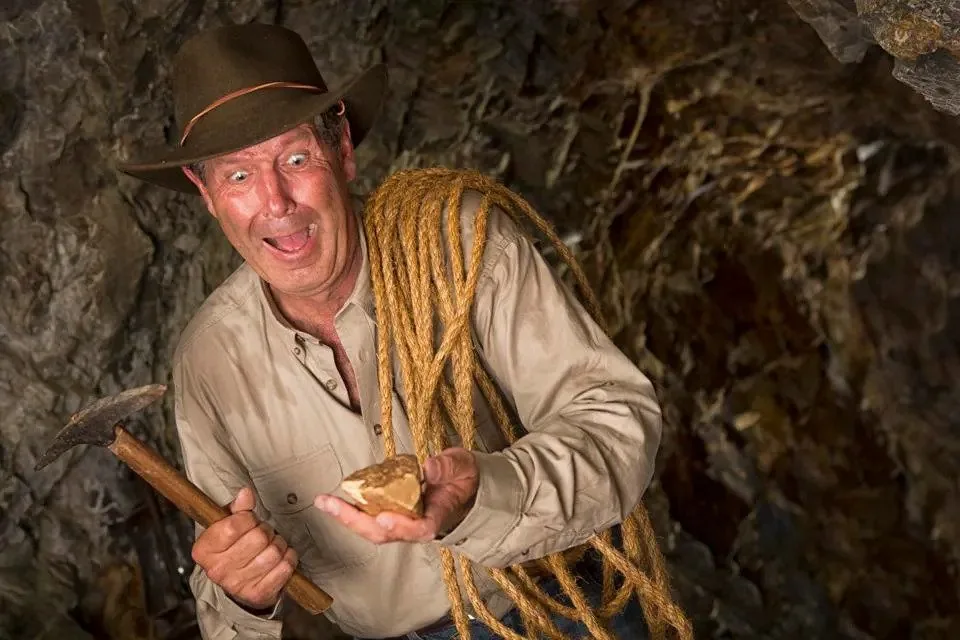

I've been getting a bunch of spam in my inbox recently telling me in panicked tones that the world as we know it is on the verge of ending and the only solution is to invest in gold. Touting its great returns, risk hedge capabilities and inflation protection for my portfolio, these missives implore me that if I want to preserve any semblance of wealth after the upcoming apocalypse, I must sell [enter the asset class of your choice here] and put that money to work in gold. Today. Now. Immediately.
Whenever the markets and world affairs are in turmoil—war, plague, political strife, social unrest—the gold-bugs emerge from their cocoons as predictably as cicadas do in the spring and making about as much noise. Maybe more.
It's tempting. After all, who doesn't seek some emotional stability and comfort during a crisis? For centuries, people have turned to gold to assuage those feelings. When uncertainty reigns, a certain calm comes from knowing you have something hard, tangible, and glistening in your possession.
For most investors, gold is like a plate of mashed potatoes, gravy and meatloaf. It is comfort food for the portfolio.
Gold as a metal has its merits. It has industrial uses, electronic conductivity and the unique quality of being both hard yet sufficiently malleable to be shaped into lovely objects of art or jewelry. We value gold as a reward for achievement or excellence. The Olympics bestows gold medals to winners, retirees get a gold watch, and we are given pep talks telling us to "go for the gold."
Great stuff. But what about gold as an investment?
Based on the traditional one troy ounce ("t oz", 31.1034768 grams) used by the Royal Mint ("owned by Her Majesty's Treasury"), gold bugs quickly point to the fact that if you had bought that one troy ounce of gold in 1970 and held on to it until now, your total return would be a jaw dropping 5,333% gain! Now compare that to the performance of the S&P Composite*. Those stocks only managed a paltry 3,737% gain over that same period.
By not buying gold, you gave up 1,666% of gains. You fool.